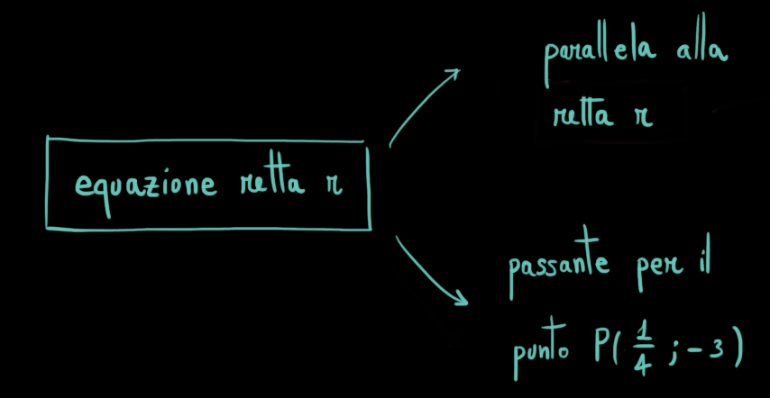
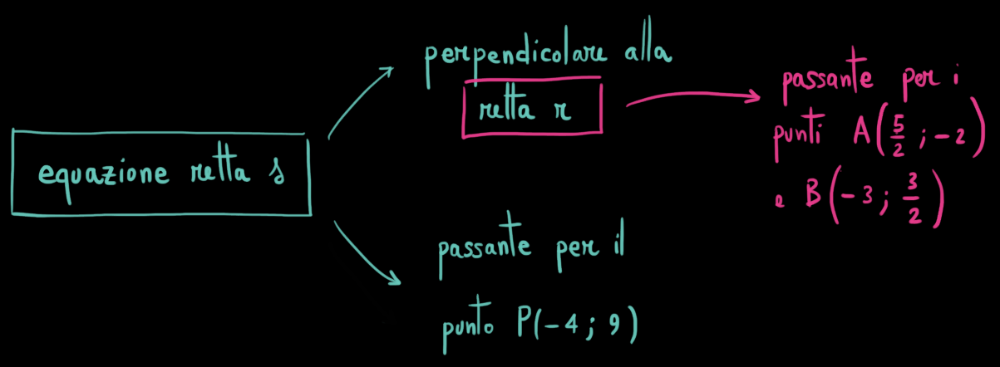

Determinare l'equazione della retta \(r\) paralella alla retta
\[
s:\qquad 5x -2y - 4 = 0
\]
e passante per il punto \(P\left(\dfrac{1}{4}\,,\,\,-3\right)\)
Lo schema risolutivo è il seguente

Provate a risolvere l'esercizio seguendo la seguente scaletta.
Troviamo l'equazione della retta \(r\).
Coefficiente angolare di \(r\)
...
Termine noto di \(r\)
...
Soluzione
L'equazione della retta \(r\) è
\[
y = \frac{5}{2}x-\frac{29}{8}
\]
Esercizio
Sia \(r\) la retta passante per i punti \(A\left(\dfrac{5}{2}\,,\,\,-2\right)\) e
\(B\left(-3\,,\,\,\dfrac{3}{2}\right)\).
Scrivere l'equazione della retta \(s\) perpendicolare alla retta \(r\) e passante per il punto
\(P(-4\,,\,\,9)\).
Lo schema risolutivo è il seguente

Provate a risolvere l'esercizio seguendo la seguente scaletta.
Troviamo l'equazione della retta \(r\).
Coefficiente angolare di \(r\)
...
Termine noto di \(r\)
...
Troviamo l'equazione della retta \(s\).
Coefficiente angolare di \(s\)
...
Termine noto di \(s\)
...
Soluzione
L'equazione della retta \(s\) è
\[
y = \frac{11}{7}x + \frac{107}{7}
\]
Esercizio
Consideriamo la retta associata all'equazione
\[
y = (2\color{blue}{}a\color{black}{} - 1)x + 3
\]
con \(\color{blue}{}a\color{black}{}\) numero qualsiasi.
Osserviamo due fatti
il coefficiente angolare della retta è \(2\color{blue}{}a\color{black}{} - 1\).
Al variare della scelta del valore di \(\color{blue}{}a\) il coefficiente angolare cambia e con
esso l'inclinazione della retta.
il termine noto \(3\) è costante, dunque per qualsiasi scelta del valore di \(\color{blue}{}a\) la retta
ottenuta passerà per il punto \((0\,;\,\,3)\).
(usate lo slider per variare il valore del parametro \(a\))
Stabilire per quale valore di \(\color{blue}{}a\) la retta è orizzontale.
Stabilire per quale valore di \(\color{blue}{}a\) la retta è decrescente.